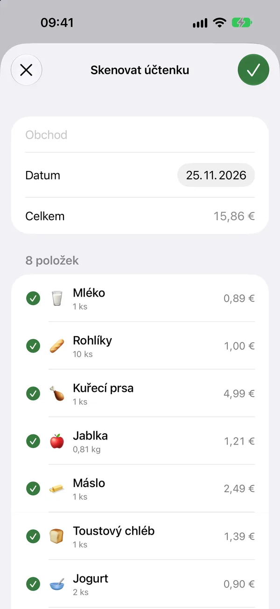

Jak naskenovat účtenku v iPhonu
-
Krok 1 Klepněte na Skenovat účtenku
V kartě Seznam klepněte vpravo nahoře na ikonu Skenovat účtenku (vedle ⋯).

-
Krok 2 Vyfoťte účtenku
Vyberte Vyfotit nebo Vybrat z galerie. Účtenku vyrovnejte a vyfoťte celou.

-
Krok 3 Zkontrolujte a uložte
Shoppie ukáže obchod, datum, částku a položky s cenami. Zkontrolujte názvy a klepněte na zelenou fajfku ✓ (Uložit). Nákup se uloží do Historie a potraviny do Spotřeby. Přepínačem Odstranit koupené položky ze seznamu si seznam rovnou vyčistíte.

Časté otázky
Funguje sken bez internetu?
Ano. Účtenka se čte přímo v iPhonu a nic se neodesílá. Na iPhonech s Apple Intelligence pomáhá s názvy produktů i model Apple v zařízení.
Proč jsou některé názvy zkratky?
Účtenky používají zkratky. Na iPhonech bez Apple Intelligence mohou některé zůstat tak, jak jsou na účtence – před uložením je proto zkontrolujte.
Další otázky najdete na stránce Podpora.